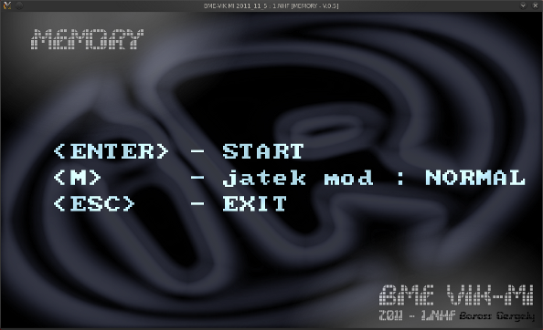
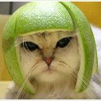
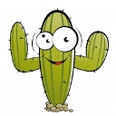
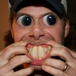
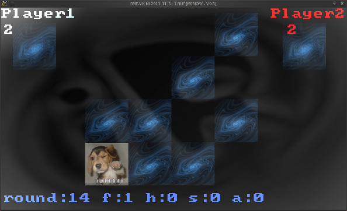

.Játékról
 |
| LETÖLTÉS |
A program grafikusan ábrázol elénk egy 4x4-es pályát kártyákból. Minden képből kettő darab van. A játék során a kártyákat lefelé fordítjuk és a soron következő játékos kettő darab lapot fordíthat fel egyszerre. Ha párt talált elviheti a lapokat és kap 1 pontot, továbbá húzhat megint kettő kártyát. Ellenben ha nem talált képpárt, akkor az ellenfél játékos következik ...

 

Extrák
A játékosok nevét módunk van megadni. A két fél játékos nevét a rogram paraméterként veszi át. Íme egy példa: ./start név1 név2
Lehetőségünk van választani normál illetve extrém mód között:
A normál mód a megszokott memoria játéknak felel meg.
Az extrém módban találkozhatunk szivecskével és bombával a játék során.
A szivecske ad egy plusz pontot és eltűnik a pályáról.
A bomba levon egy pontot ( negatívba nem lehet menni )
és nem tűnik el a pályáról, azaz figyelnünk kell, nehogy megint belenyúljunk!
Felépítés
Igyekeztem logikusan felépíteni a kódot és a környezetet.
Környezet alatt értendő a base mappában található fájlok elrendezése.
könyvtárfa:
- - tartalmazza a menüben és játék közben látható glow effekteket
[ base/effects ]
- - bitmap font ,egyszerű ASCII tábla
- feldologázáért az Allegro a felelős
[ base/fonts ]
- - itt találhatóak a kép párok
[ base/images ]
- -
menü és az engine logója
[ base/logo ]
- - a játék során hallható hangok
[ base/sounds ]
Az Allegro egy platform független segédkönyvtár. Rengeteg fügvényt tartalmaz és beépülő modulokat. Ezek segítségével tudtam megcsinálni grafikusan a játékot.
-
Felhasználom az Allegro képbetöltőjét, ami *.jpg tömörített képeket is képes feldolgozni. ( libjpeg csomag szükséges hozzá)
{ al_load_bitmap( "filename.jpg" ); }
- Használom a hangkezelő fügvényeket, amik *.ogg,*.wav hangfájlokat is képesek lejátszani.
{ al_load_sample( "filename.ogg"); }
- Igénybe vettem a bemeneti eszközök lekérését: egér,billentyű
{ X11 és Xevent }
{ ALLEGRO_EVENT event; }
- Végűl a szöveg megjelenítéséhez a beépített bitmap font technológiára épüló fügvényeket használom.
Azért tga, mert ez tartalmaz alpha csatornát, ami előnyös ez esetben.
{ al_load_font("filename.tga");}
Mivel platform független az összes beépülő modulom, ezért a csomag tartalmazza a legelterjetebb operációs rendszereken futtatható binary-kat.
A [ bin ] mappában található:
- Linux alatt :
- start-release_codeblocks
- start-debug_codeblocks
- start-make
- Windows alatt :
- start-release-v8.exe
- start-debug_v8.exe
- start-release-v10.exe
- start-debug-v10.exe
- Mac OSX :
- start-osx
Linux alatt teljes mértékben tesztelve lett.
Windows és Mac alatt csak VMWare virtuális gépeket lett tesztelve.
Virtuális OSX alatt az ablakozó nem működött, mert sajnos nem tudtam grafikus drivert működésre bírni vmware alatt, de a kód szépen lefordúlt Xcode IDE környezettel ...
Developer - források
A játék forráskódja az [ src ] mappában található.
Projekt fájlok az alábbi mappákban találhatóak:
- [ codeblocks ]
- [ make ]
- [ vc10 ]
- [ vc8 ]
Található egy [ support ] mappa is a csomagban, amiben a platformokhoz tartozó szükségletek vannak.
Segédletek
A házifeladat megoldására felhasználtam az Allegro-t, amit az infoc oldalon engedélyeztek, hogy lehet használni. Továbbá az ehez tartozó tutorialokat böngésztem át. Mindezek segítették ,hogy megszülessen ez a grafikus memory játék, egyébként sima konzolos lett volna, de szerencsére időben utánajártam az Allegro működésének.
